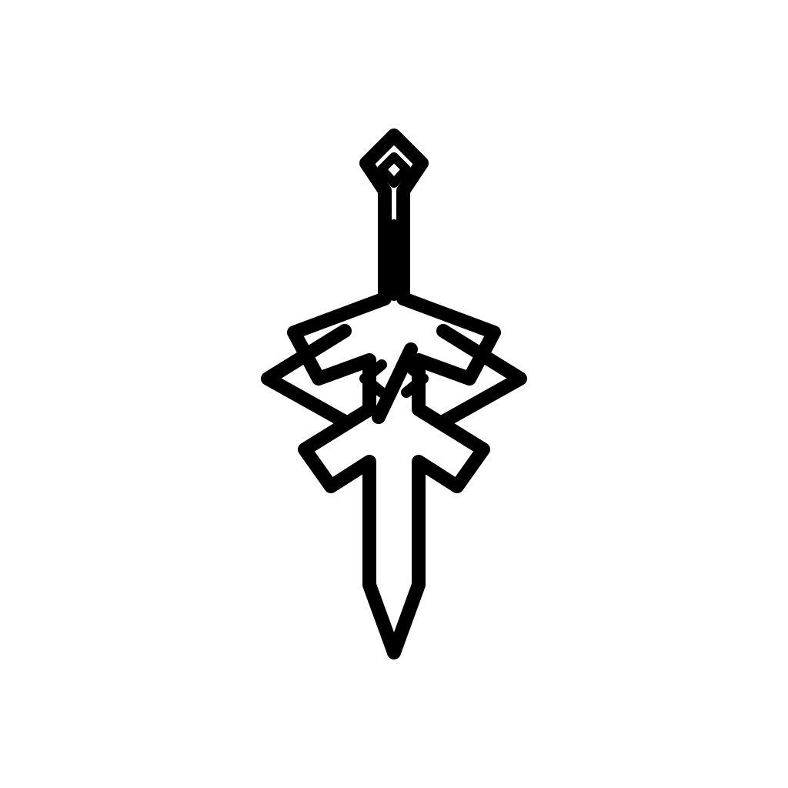

Landing pages
Páginas focadas em apresentação, conversão e comunicação clara.

Minha trajetória começou pela curiosidade por tecnologia e desenvolvimento web. Com o tempo, passei a estudar HTML, CSS e JavaScript, desenvolvendo projetos próprios e buscando criar experiências cada vez mais profissionais.
Páginas focadas em apresentação, conversão e comunicação clara.
Experiências organizadas para resolver fluxos e tarefas do usuário.
Telas para visualizar dados, progresso e informações importantes.
Layouts que funcionam bem do celular ao desktop.
Plataforma de estudos para medicina.
Projeto pessoal focado em conteúdo gamer.
Atualizações e melhorias constantes.

Gosto de jogos focados em descoberta, progressão e construção de mundos bem elaborados.
Resolver problemas complexos e encontrar soluções elegantes é uma das partes que mais gosto no desenvolvimento.
Estou sempre estudando novas ferramentas, padrões e formas de criar experiências melhores.
Além dos trabalhos profissionais, também desenvolvo projetos próprios, como FMEDCHOICES, SoulForge e novas ideias.
Antes de criar, busco entender objetivo, contexto e público.
Organizo estrutura, conteúdo e caminho visual da interface.
Transformo a ideia em uma página funcional, responsiva e rápida.
Ajusto espaçamentos, estados, textos e comportamento mobile.
Finalizo com uma experiência polida e pronta para uso.